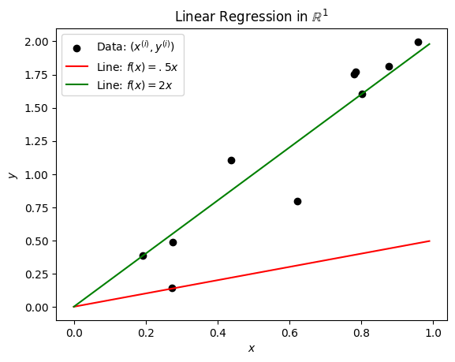
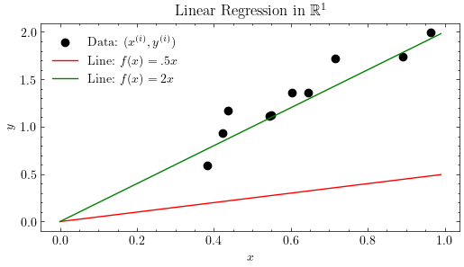
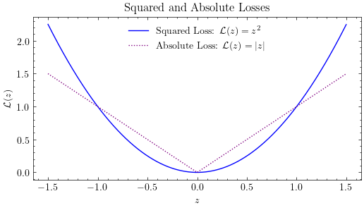
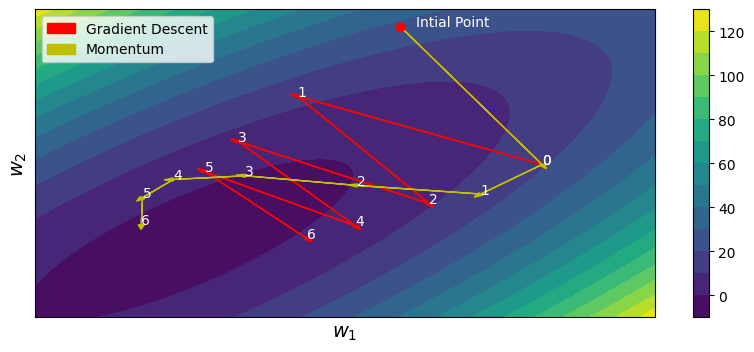
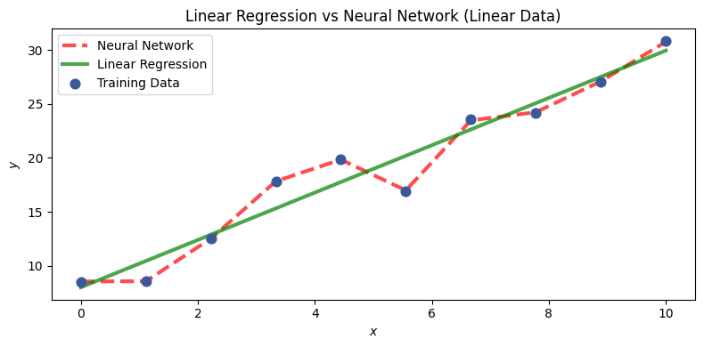
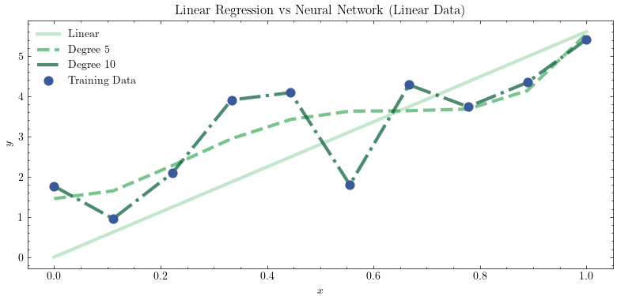

import matplotlib.pyplot as plt
import numpy as np
from mpl_toolkits.mplot3d import Axes3DCode for Producing Images in Lecture Notes
Linear Regression Figures
np.random.seed(1234) # Seed randomness
n = 10 # Number of observations
w = 2 # True parameter
X = np.random.rand(n) # x-values
y = X.dot(w).T + np.random.normal(size=n) * .2 #y-values
plt.scatter(X,y, color='black', label=r'Data: $(x^{(i)}, y^{(i)})$')
plt.xlabel(r'$x$')
plt.ylabel(r'$y$')
xaxis = np.arange(0,1,.01)
plt.plot(xaxis, xaxis*.5, label=r'Line: $f(x) = .5x$', color='red')
plt.plot(xaxis, xaxis*w, label=r'Line: $f(x) = 2x$', color='green')
plt.legend()
plt.title(r'Linear Regression in $\mathbb{R}^1$')
plt.savefig('images/regression_1d.pdf')
plt.xlabel(r'$z$')
plt.ylabel(r'$\mathcal{L}(z)$')
xaxis = np.arange(-1.5,1.5,.001)
plt.plot(xaxis, xaxis**2, label=r'Squared Loss: $\mathcal{L}(z)=z^2$', color='blue')
plt.plot(xaxis, np.abs(xaxis), label=r'Absolute Loss: $\mathcal{L}(z)=|z|$', color='purple', linestyle='dotted')
plt.legend()
plt.title(r'Squared and Absolute Losses')
plt.savefig('images/regression_losses.pdf')
import numpy as np
import matplotlib.pyplot as plt
from matplotlib.lines import Line2D
# Seed randomness
np.random.seed(1234)
n = 10 # Number of observations
w = np.array([2, .5]) # True parameter
X = np.random.rand(n, 2) # x-values
y = X.dot(w).T + np.random.normal(size=n) * .1 # y-values
# Create figure and 3D axis
fig = plt.figure()
ax = fig.add_subplot(111, projection='3d')
# Scatter plot for data points
ax.scatter(X[:, 0], X[:, 1], y, color='black', label=r'Data: $(x_1^{(i)}, x_2^{(i)}, y^{(i)})$')
# Hyperplane 1: Green
x1 = np.arange(0, 1, .01)
x2 = np.arange(0, 1, .01)
X1, X2 = np.meshgrid(x1, x2)
Z = w[0] * X1 + w[1] * X2
ax.plot_surface(X1, X2, Z, alpha=.5, color='green')
# Hyperplane 2: Red
ax.plot_surface(X1, X2, .5 * X1 + 0 * X2, alpha=.5, color='red')
# Labels and title
ax.set_xlabel(r'$x_1$')
ax.set_ylabel(r'$x_2$')
ax.set_zlabel(r'$y$')
ax.set_title(r'Linear Regression in $\mathbb{R}^2$')
# Manually create custom legend handles for the surfaces
handles = [
Line2D([0], [0], marker='o', color='black', markerfacecolor='black', markersize=6, label=r'Data: $(x_1^{(i)}, x_2^{(i)}, y^{(i)})$'),
Line2D([0], [0], color='green', lw=4, label=r'Hyperplane: $f(x) = 2x_1 + .5x_2$'),
Line2D([0], [0], color='red', lw=4, label=r'Hyperplane: $f(x) = .5x_1 + 0x_2$')
]
# Add legend
plt.legend(handles=handles, loc='upper left', framealpha=1)
# Save the figure
plt.savefig('images/regression_2d.pdf', bbox_inches='tight')
plt.show()
Non-linear Regression Figures
## Gradient descent
import numpy as np
import matplotlib.pyplot as plt
import matplotlib.patches as mpatches
from matplotlib import cm
import torch
%matplotlib inline
class QuadFunc:
def __init__(self, a, b, c, d, e):
self.a = a
self.b = b
self.c = c
self.d = d
self.e = e
def getParams(self, x, y):
if y is None:
y = x[1]
x = x[0]
return x,y
def __call__(self, x, y=None):
x,y = self.getParams(x,y)
return 0.5 * (self.a*x**2 + self.b*y**2) + self.c * x * y + self.d * x + self.e * y
def grad(self, x, y=None):
#df/dx = ax + cy + d
#df/dy = by + cx + e
x,y = self.getParams(x,y)
return torch.tensor([self.a * x + self.c * y + self.d, self.b * y + self.c * x + self.e])
def hess(self, x, y=None):
#d2f/dx2 = a
#d2f/dy2 = b
#d2f/dxdy = c
#d2f/dydx = c
x, y = self.getParams(x,y)
return torch.tensor([[self.a, self.c], [self.c, self.b]])
class GradientDescent:
def __init__(self, lr=1, b1=0.9, b2=0.999):
# b1 -> Momentum
# b2 -> ADAM
# ADAM Paper -> https://arxiv.org/abs/1412.6980
self.lr = lr # learning rate
self.b1 = b1 # grad aggregation param (for Momentum)
self.b2 = b2 # grad^2 aggregation param (for ADAM)
self.v = 0 # grad aggregation param
self.w = 0 # grad^2 aggregation param
self.t = 0
self.eps = 1e-9
def __call__(self, grad,hess):
self.t += 1
# aggregation
self.v = self.b1*self.v + (1-self.b1)*grad
self.w = self.b2*self.w + (1-self.b2)*grad**2
# bias correction
vcorr = self.v/(1-self.b1**self.t)
wcorr = self.w/(1-self.b2**self.t) if self.b2 != 0 else 1
return -1*self.lr*vcorr/(wcorr**0.5 + self.eps)
class Newtons:
# https://en.wikipedia.org/wiki/Newton%27s_method_in_optimization
def __init__(self, lr=1):
self.lr = lr
def __call__(self,grad,hess):
return -1*self.lr*torch.matmul(torch.inverse(hess), grad)
def runOptim(init,optim,func,steps):
curpos = init # current position
path = [curpos]
for _ in range(steps):
grad = func.grad(curpos)
hess = func.hess(curpos)
dx = optim(grad,hess)
curpos = curpos + dx
path.append(curpos)
return path
def showPath(func,init,paths,labels,colors,levels):
x = torch.arange(-10,10,0.05)
y = torch.arange(-10,10,0.05)
# create meshgrid
xx, yy = torch.meshgrid(x,y)
zz = func(xx,yy)
# create contour
fig, ax = plt.subplots(1,1,figsize=(10,4))
cp = ax.contourf(xx,yy,zz,levels)
fig.colorbar(cp)
# mark initial point
ax.plot(init[0],init[1],'ro')
ax.text(init[0]+0.5,init[1],'Intial Point',color='white')
# Plot paths
for pnum in range(len(paths)):
for i in range(len(paths[pnum])-1):
curpos = paths[pnum][i]
d = paths[pnum][i+1] - curpos
ax.arrow(curpos[0],curpos[1],d[0],d[1],color=colors[pnum],head_width=0.2)
ax.text(curpos[0]+d[0],curpos[1]+d[1],str(i),color='white')
# Add legend
legends = []
for col in colors:
legends.append(mpatches.Patch(color=col))
# Put legend in top left corner
ax.legend(legends,labels, loc='upper left')
a = 1/torch.sqrt(torch.tensor(2.0))
init = torch.matmul(torch.tensor([[a,a],[-a,a]]),torch.tensor([-5.0,7.5]))
ell = QuadFunc(a,a,-0.8*a,a,a)
steps = 7
lr = 1.5
regGD = GradientDescent(lr,0,0) # Without Momentum
momGD = GradientDescent(lr,0.9,0) # Momentum
path1 = runOptim(init,regGD,ell,steps)
path2 = runOptim(init,momGD,ell,steps)
# Set figure size
showPath(ell,init,[path1,path2],['Gradient Descent','Momentum'],['r','y'], 15)
# Turn off axis ticks
plt.xticks([])
plt.yticks([])
plt.xlabel(r'$w_1$', fontsize=14)
plt.ylabel(r'$w_2$', fontsize=14)
plt.savefig('images/regression_momentum.pdf', bbox_inches='tight', dpi=300)/opt/homebrew/Caskroom/miniconda/base/envs/rads/lib/python3.10/site-packages/torch/functional.py:554: UserWarning: torch.meshgrid: in an upcoming release, it will be required to pass the indexing argument. (Triggered internally at /Users/runner/work/pytorch/pytorch/pytorch/aten/src/ATen/native/TensorShape.cpp:4316.)
return _VF.meshgrid(tensors, **kwargs) # type: ignore[attr-defined]
import numpy as np
import matplotlib.pyplot as plt
from sklearn.linear_model import LinearRegression
from sklearn.neural_network import MLPRegressor
from sklearn.preprocessing import StandardScaler
# Step 1: Generate noisy linear data
n = 10 # Number of observations
np.random.seed(0)
X = np.linspace(0, 10, n).reshape(-1, 1)
true_slope = 2.5
true_intercept = 5
noise = np.random.normal(0, 2, n).reshape(-1, 1) # Gaussian noise
y = true_slope * X + true_intercept + noise
y = y.ravel()
# Step 2: Fit linear regression model
lin_reg = LinearRegression()
lin_reg.fit(X, y)
y_lin_pred = lin_reg.predict(X)
# Step 3: Train neural network using scikit-learn
# It's often helpful to scale data for MLPs
scaler = StandardScaler()
X_scaled = scaler.fit_transform(X)
mlp = MLPRegressor(hidden_layer_sizes=(16, 32, 64, 32, 16), activation='relu', max_iter=10000)
mlp.fit(X_scaled, y)
y_nn_pred = mlp.predict(X_scaled)
# Step 4: Plotting
plt.figure(figsize=(8, 4))
plt.plot(X, y_nn_pred, color='red', label='Neural Network', linewidth=3, alpha=0.7, zorder=1, linestyle='--') # Muted Maroon
plt.plot(X, y_lin_pred, color='green', label='Linear Regression', linewidth=3, alpha=0.7, zorder=1) # Medium Olive
plt.scatter(X, y, label='Training Data', marker='o', color='#3B5998', s=60, zorder=2) # Deep Cornflower Blue
plt.legend()
plt.title('Linear Regression vs Neural Network (Linear Data)')
plt.xlabel(r'$x$')
plt.ylabel(r'$y$')
plt.tight_layout()
plt.savefig('images/regression_overfitting.pdf', bbox_inches='tight', dpi=300)
import numpy as np
import matplotlib.pyplot as plt
from sklearn.linear_model import LinearRegression
from sklearn.neural_network import MLPRegressor
from sklearn.preprocessing import StandardScaler
# Step 1: Generate noisy quadratic data
# seed
np.random.seed(0)
n = 10 # More points for smoother curve
X = np.linspace(-10, 10, n).reshape(-1, 1)
true_a = 1.2
true_b = -3.4
true_c = 2.0
noise = np.random.normal(0, 20, n).reshape(-1, 1) # Gaussian noise
y = true_a * X**2 + true_c + noise
y = y.ravel()
# Step 2: Fit linear regression model (will underfit)
lin_reg = LinearRegression()
lin_reg.fit(X, y)
y_lin_pred = lin_reg.predict(X)
# Step 3: Scale data for MLPs
scaler = StandardScaler()
X_scaled = scaler.fit_transform(X)
# Step 4: Train standard MLPRegressor
mlp = MLPRegressor(hidden_layer_sizes=(16, 32, 64, 32, 16), activation='relu',
max_iter=10000, random_state=0)
mlp.fit(X_scaled, y)
y_nn_pred = mlp.predict(X_scaled)
# Step 5: Train regularized MLPRegressor (L2 regularization via alpha)
mlp_reg = MLPRegressor(hidden_layer_sizes=(16, 32), activation='relu',
alpha=20, max_iter=10000, random_state=0)
mlp_reg.fit(X_scaled, y)
y_nn_reg_pred = mlp_reg.predict(X_scaled)
# Step 6: Plot results
plt.figure(figsize=(8, 5))
plt.plot(X, y_nn_pred, color='red', label='Neural Network', linewidth=3, alpha=0.7, zorder=1, linestyle='--')
plt.plot(X, y_nn_reg_pred, color='green', label='Regularized Neural Network', linewidth=3, zorder=1)
plt.plot(X, y_lin_pred, color='red', label='Linear Regression', linewidth=3, alpha=0.7, zorder=1, linestyle=':')
plt.scatter(X, y, label='Training Data', marker='o', color='#3B5998', s=60, zorder=2)
plt.legend()
plt.title('Linear Regression vs Neural Network (Quadratic Data)')
plt.xlabel(r'$x$')
plt.ylabel(r'$y$')
plt.tight_layout()
plt.savefig('images/regression_regularization.pdf', bbox_inches='tight', dpi=300)
plt.show()